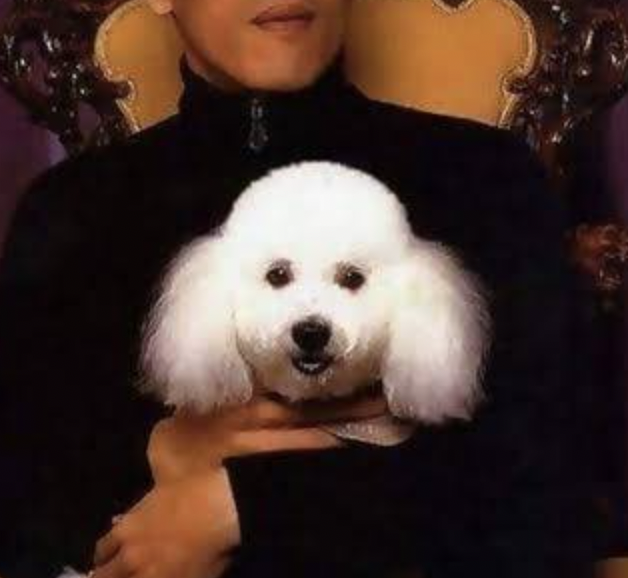

| ฟูฟู (สุนัข) | ||
| Menu | ฟูฟู เป็นสุนัขพันธุ์พูเดิลเพศผู้ เกิดเมื่อวันที่ 15 มิถุนายน พ.ศ. 2540 เดิมเป็นสุนัขของผู้เพาะพันธุ์สุนัขในตลาดนัดสวนจตุจักรที่ได้ถวายสุนัขนี้ขณะมีอายุหนึ่งเดือนแด่พระเจ้าหลานเธอ พระองค์เจ้าสิริวัณณวรีนารีรัตน์ เมื่อวันที่ 9 สิงหาคมปีเดียวกัน ด้วยสุนัขนี้มีลักษณะเด่นคือมีขนสีขาวแน่นและฟูฟ่อง จึงประทานชื่อว่า "ฟูฟู” แล้วนำไปบำรุงเลี้ยงที่พระตำหนักนนทบุรีระยะหนึ่ง |  |
| Theerakarn Maiwong 642110319 | ||